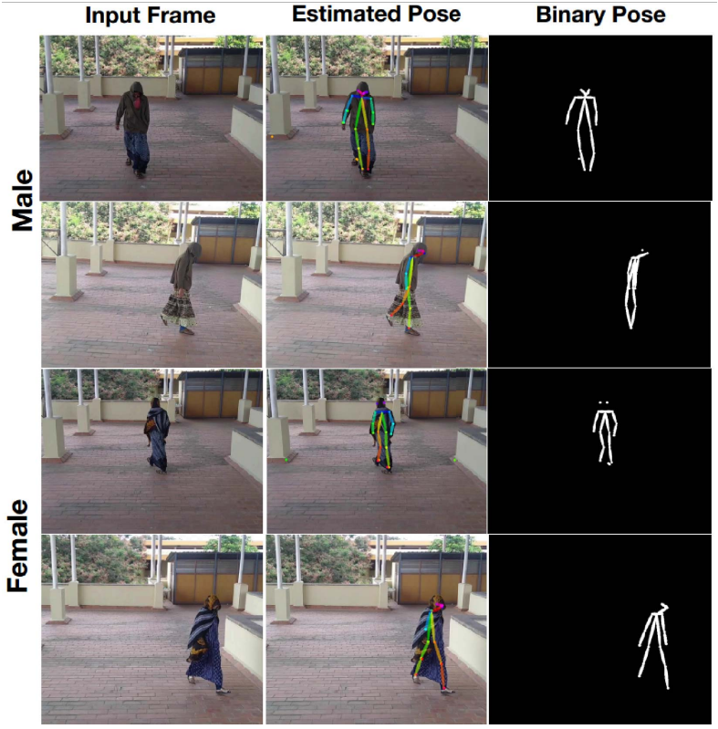

|
I am currently pursuing Masters in Computer Vision (MSCV) at the Robotics Instituteat Carnegie Mellon University. My primary interests lie in Computer Vision, Artificial Intelligence, Machine Learning, and Optimization. Prior to joining CMU, I worked as a Software Engineer at Microsoft (R&D) Pvt. Ltd., where my work focused on building agile deployment and experimentation of ML models for spam/phish detection during mail flow for Microsoft Defender for Office (MDO). I had the previledge of working with a team of talented engineers and researchers, and was mentored by Jay Goyal, Saurabh Shrivastav and Ganesh Pande. In 2018, I worked under the supervision of Dr. Amarjot Singh and Dr S.N Omkar in the Computational Intelligence lab at Indian Institute of Science, Bangalore on gait-based gender recognition system for subjects in loosely fitted clothing. I completed my undergraduate education with a Major in Computer Science and Engineering from National Institute of Technology, Warangal in 2021. I had the pleasure of working with Dr. R Padmavathy for my undergraduate thesis.
In the late summer of 2020, I was a part of the Software Product Sprint at |

Carnegie Mellon University |
Microsoft (R&D) Pvt. Ltd.
|

National Institute of Technology,
Warangal |

Google APAC |

Indian Institute of Science, Bengaluru |
|
|
|

|
Amarjot Singh, Aman Kumar, Anisha Jain Proceedings of the IEEE/CVF Conference on Computer Vision and Pattern Recognition (CVPR) Workshops, 2019 Developed a real-time disguised gender identification system based on gait and pose estimation using Bayesian Res-Net model. Furthermore, I collaborated with a team of researchers to annotate the loosely fitted clothed individuals (LFCI) dataset to further the research. |
|
|
|
[Aug 2023] Starting my M.S. Computer Vision (MSCV) degree at the Robotics Institute, Carnegie Mellon
University (CMU). [Jun 2021] Started a new position as a Software Engineer, Security, Compliance and Management Org, Microsoft, Hyderabad, India. [May 2021] Received my Bachelor's degree from National Institute of Technology Warangal, with a major in Computer Science and Engineering. [May 2020] Started summer internship in the Microsoft Teams Mobile team at Microsoft, Hyderabad, India [May 2019] Started summer internship in the The Garage at Microsoft, Hyderabad, India [Feb 2019] Started a new position as Programmer at G-Bit Studios [May 2018] Started summer internship at Indian Institute of Science, Bangalore |
|
Source code from Jon Barron
|